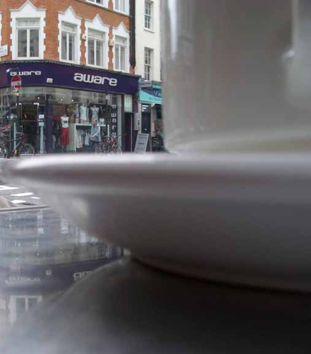
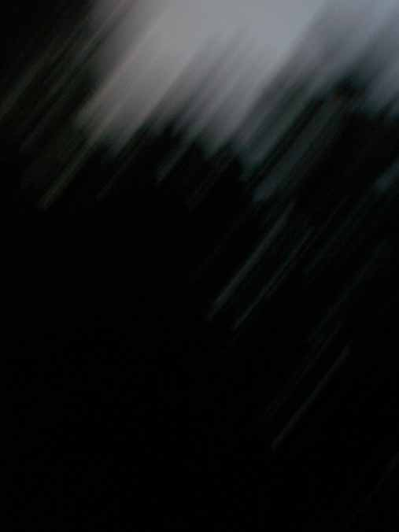

| < | > |
| The view past my coffee cup | [2004-07-10 20:53] |
| [mood interspersed] [music The Drunkard] |
|
|  At fifty I knew the will of heaven. I had that echoing in my head for the last few months. Time's running out. So I have a plan. I'm sticking to it more or less. I've been taking pics, but I'm a bit slow to know what to do with them yet. My favourite setting is the nighttime shot. The blurry mystery that emerges from the little box.  |
|